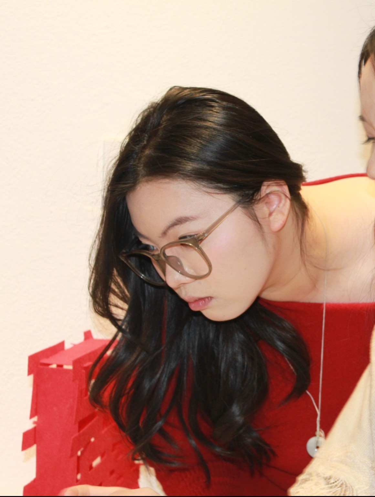
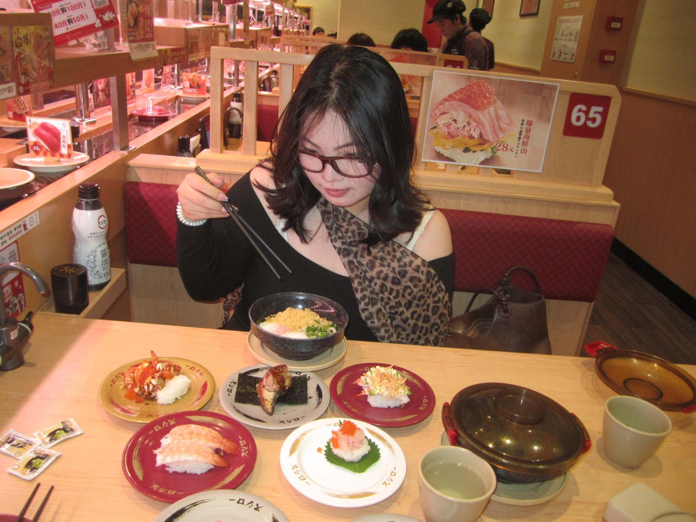
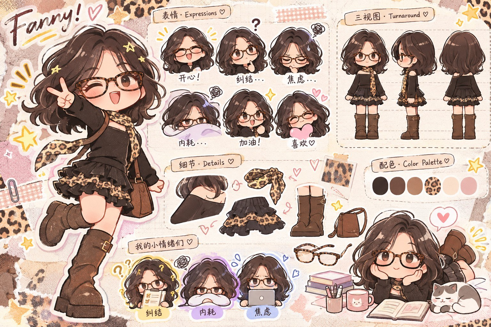
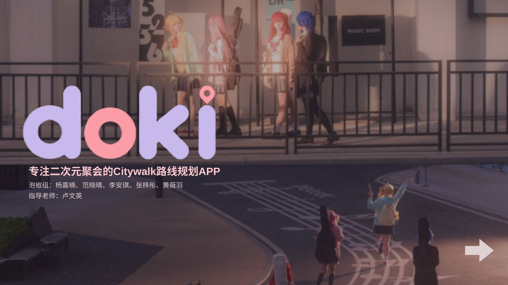

✳ CREATIVE PORTFOLIO · 2026
Hello!
I'm Fanny.
一个喜欢观察生活、探索新鲜事物，
也喜欢把有趣想法变成现实的设计学生。
A little creativity, a lot of curiosity. ♡

✳hello ♡
01 / A LITTLE ABOUT ME
Nice to
meet you!你好，我是 Fanny ♡
广州美术学院 · 产品设计专业（2023—2027）。喜欢从生活中寻找灵感，通过策划、设计、摄影与影像创作，把想法变成可以被感知和体验的作品。
喜欢音乐、摄影和手工艺，也乐于探索 AIGC 带来的新表达方式。
02 / IP & MOTION
Little characters,
big ideas.IP 设计与相关视频
从一个角色的表情、动作到影像表达，让小小的创意拥有自己的故事。

CHARACTER DESIGN · FANNY
Fanny 的小小世界 ✳
角色形象、表情设计、三视图和服饰细节。这里展示的是你上传的原始角色设计图。
▶ IP 动画 / 视频作品 · 点击播放
03 / IDEAS INTO REALITY
From ideas
to reality.策划与落地
探索 IP、空间和文化如何通过活动设计，与真实的人产生连接。
04 / DIGITAL EXPLORATION
Let's go,
doki!二次元 Citywalk APP 调研
一个聚焦二次元聚会与委托出行场景的 Citywalk 路线规划 APP 概念。从行业调研、用户洞察到产品定位，尝试让陌生城市的路线探索变得更轻松。

05 / TO BE CONTINUED
Thanks for
flying with Fanny!
The journey is just beginning... ♡
Say hello ✉clear121389@qq.com
↑ BACK TO TOP